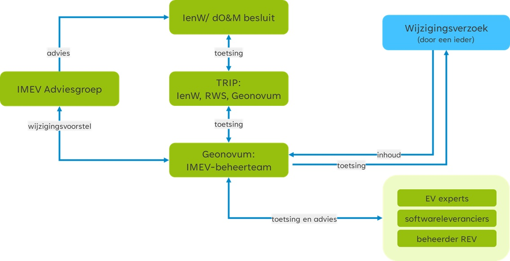

Dit is de definitieve versie van dit document. Wijzigingen naar aanleiding van consultaties zijn doorgevoerd.
Samenvatting
Iedereen die gebruik maakt van het Informatiemodel Externe Veiligheid (IMEV) kan wijzigingsverzoeken indienen via de IMEV-helpdesk. Wijzigingsverzoeken kunnen variëren van een betere aansluiting op het werkproces, handiger voor implementatie tot en met het oplossen van fouten in het informatiemodel. De wijzigingsverzoeken hebben tot doel een betere werking van de standaard in de praktijk. Ook kunnen ontwikkelingen aanleiding zijn om het Informatiemodel Externe Veiligheid te wijzigen. Denk daarbij aan nieuwe wet- en regelgeving of aanpassing van de standaard door internationale ontwikkelingen.
Wij geven inzicht in de ontvangen wijzigingsverzoeken en de status van de wijzigingsverzoeken via de publieke IMEV werkomgeving op GitHub. In het geval Geonovum een wijzigingsproces start voor een nieuwe versie van het IMEV, bundelen we de verzoeken tot een wijzigingsvoorstel. Dit wijzigingsprotocol beschrijft het wijzigingsproces en daarmee ook de procedure die het wijzigingsvoorstel doorloopt. Voor inzicht in de ontwikkeling, wijzigingsverzoeken en bijeenkomsten rondom het Informatiemodel Externe Veiligheidsrisico's zetten we Geonovum website in.
Het wijzigingsvoorstel vormt de basis voor de nieuwe versie van het IMEV. Ons beheerteam werkt daarvoor nauw samen met experts uit de praktijk. Met behulp een publieke consultatie op de Geonovum website vragen wij de gebruikers van het IMEV om feedback. Het definitieve wijzigingsvoorstel leggen wij voor aan de IMEV Adviesgroep. Het Ministerie van IenW besluit en stelt de nieuwe versie vast. Dit doet zij mede op basis van advies van de IMEV adviesgroep. Ook geeft het ministerie aan hoelang de oude versie van het informatiemodel wordt ondersteund en wanneer de oude versie komt te vervallen.
1. Inleiding
1.1 Introductie
Geonovum ontwikkelt en beheert het Informatiemodel Externe Veiligheid (IMEV) in opdracht van het Ministerie van Infrastructuur en Waterstaat. Mensen die in de praktijk gebruik maken van dit informatiemodel hebben vragen over de toepassing ervan, willen weten welke ontwikkelingen er spelen en hebben mogelijk suggesties voor aanpassingen van het informatiemodel. Dit wijzigingsprotocol is samen met het beheerplan onderdeel van het beheerproces van het IMEV. Geonovum voert het beheer en de doorontwikkeling van standaarden uit volgens BOMOS: het beheer- en ontwikkelmodel voor open standaarden. Wijzigingen in het IMEV worden niet zomaar doorgevoerd. Voor de ene gebruiker zal de wijzing gering van impact zijn, voor de ander kan het grote gevolgen hebben. Daar houden wij rekening mee. De gebruikers van het IMEV zijn betrokken via verschillende groepen en overleggen. In dit wijzigingsprotocol zijn vastgelegd wie betrokken zijn en wat de belangrijkste taken en verantwoordelijkheden zijn tijdens het wijzigingsproces.
1.2 Waarom een wijzigingsprotocol
In dit wijzigingsprotocol staan de sturende principes achter het wijzigingsproces voor deze standaard die Geonovum: de manier waarop wijzigingen in het Informatiemodel Externe Veiligheid plaatsvinden. Met dit protocol wordt elke wijziging van het informatiemodel een voorspelbaar proces voor de ketenpartners en gebruikers van het informatiemodel. In het protocol zijn basisbegrippen en uitgangspunten uiteengezet voor het wijzigingsproces. Bijvoorbeeld wat onder nieuwe en volgende versies verstaan wordt.
1.3 Begrippen
Adviesgroep
Doel van de IMEV Adviesgroep is het sturen op verbinding en samenhang bij de doorontwikkeling van het informatiemodel. Dit doet zij door het controleren van het tot zover doorlopen wijzigingsproces, het wijzigingsvoorstel van advies te voorzien (het al dan niet doorvoeren van de wijzigingen en opleveren van een nieuwe versie van IMEV) en dit advies aan de opdrachtgever voor te leggen. De opdrachtgever besluit of de wijzigingen worden doorgevoerd op het IMEV.
De bronhouders worden via de koepels IPO, VNG en ODNL vertegenwoordigd in de adviesgroep. Ook het ministerie van IenW als opdrachtgever, Rijkswaterstaat als beheerder van het REV en Geonovum als beheerder van het IMEV nemen deel aan deze adviesgroep. De adviesgroep heeft een onafhankelijk voorzitter.
Expert- en gebruikersgroepen
De expert- en gebruikersgroepen leveren input voor de impactanalyses van de wijzigingsverzoeken aan het IMEV-beheerteam van Geonovum.
IMEV en bijbehorende producten
Het Informatiemodel Externe Veiligheid bevat afspraken over de digitale structuur waarin overheden gegevens vastleggen over de opslag, het transport en het gebruik van gevaarlijke stoffen. Het IMEV bestaat uit de volgende producten:
Modeldocument
Begrippenkader
JSON-schema
API specificaties
Voorbeeldbestanden
Het EAP-bestand met UML-diagrammen
Wijzigingsprotocol
Hiermee wordt het geheel van vastgelegde regels en afspraken voor het wijzigen van de standaard vastgelegd.
Wijzigingsproces
Het wijzigingsproces is de daadwerkelijke wijziging van het IMEV op een bepaald moment. Het volledige wijzigingsproces doorloopt de fasen van het wijzigingsprotocol met een datum van inwerkingtreding van de nieuwe versie van het IMEV.
Wijzigingsverzoek
Wijzigingsverzoeken zijn wensen of eisen voor aanpassing van de standaard. Een wijzigingsverzoek wordt door een gebruiker van de standaard ingediend bij de IMEV-helpdesk van bij Geonovum. Volgens de gebruiker moet het Informatiemodel op een bepaald onderdeel met reden worden aangepast of aangevuld voor een betere werking van de standaard in de praktijk. Het wijzigingsverzoek wordt door het IMEV-beheerteam beoordeeld, ingeschat en aan de wensen- en eisenlijst toegevoegd. Deze is voor iedereen toegankelijk via de publieke IMEV werkomgeving op GitHub. Een wijzigingsverzoek dat niet wordt ingewilligd, wordt beargumenteerd afgewezen.
Wijzigingsvoorstel
In het wijzigingsproces worden meerdere wijzigingsverzoeken gebundeld tot één wijzigingsvoorstel voor het wijzigen van de standaard en de bijbehorende producten.
2. Gebruik van het wijzigingsprotocol
Het protocol schrijft een vast stramien voor het wijzigen van de standaard voor. Het protocol benoemt de fasen en de op te leveren resultaten. Belangrijk zijn de randvoorwaarden en uitgangspunten. De gebruikers van het informatiemodel Externe Veiligheid betrekken wij bij het wijzigen van het model. We zetten op en rij welke betrokkenen er zijn.
2.1 Protocol versus proces
De titel van dit document geeft aan dat het hier om een protocol gaat. Toch wordt in dit document ook gesproken over processen. Een wijzigingsprotocol beschrijft de manier waarop wijzigingen in het Informatiemodel Externe Veiligheid plaatsvinden: het wijzigingsproces. In het protocol zijn basisbegrippen en uitgangspunten uiteengezet voor het wijzigingsproces, bijvoorbeeld wat onder nieuwe en volgende versies verstaan wordt en wanneer deze verwacht mogen worden. De daadwerkelijke planning van een nieuwe versie wordt in overleg met de opdrachtgever en eigenaar van de standaard, het Ministerie van Infrastructuur en Waterstaat, en de beheerder van de Register Externe Veiligheid (REV) periodiek afgestemd.
Met behulp van dit wijzigingsprotocol voor het Informatiemodel Externe Veiligheid geeft Geonovum:
inzicht in het behandel- en besluitproces dat ten grondslag ligt aan het versiebeheer;
inzicht in de wijzigingsverzoeken;
inzicht in een voorgestelde wijziging van de standaard;
stabiliteit aan de standaard;
continuïteit aan de standaard;
een eenduidige aanpak.
2.2 Releasebeleid
2.2.1 Nieuwe versie van de standaard
Een release van een standaard is een nieuwe uitgave van de standaard. De nieuwe release kenmerkt zich ten opzichte van de oude versie door een hoger versienummer. Een release betreft 1 product van een standaard of is een bundel van meerdere producten van de betreffende standaard. Bij de release is ieder product voorzien van een nieuw versienummer conform X.Y.Z schrijfwijze (zie hierna) en een status. Het JSON-schema en de voorbeeldbestanden hebben daarom ieder hun eigen versienummer.
Bij een standaard in beheer horen ook afspraken over het versiebeheer. Versies van een standaard zijn er in verschillende gradaties die elk een relatie hebben met een voorgaande versie. De wijzigingen documenteren wij en leggen wij vast het betreffende product. De gebruiker kan zo nagaan wat er is gewijzigd.
Elk product van onze standaarden voorzien wij van een versienummer. Dit doen wij conform Semantic Versioning (SemVer). Elk product heeft zijn eigen versienummer volgens de X.Y.Z schrijfwijze. We hanteren drie typen versies voor een wijziging van een standaard. Bijvoorbeeld: versie 2.1.0 (=X.Y.Z):
X-wijzigingen Dit zijn grote wijzigingen die de structuur van de standaard veranderen. Hierdoor zijn X-wijzigingen niet backwards compatible. Frequentie: in overleg met de opdrachtgever.
Y-wijzigingen Dit zijn wijzigingen die niet de structuur veranderen. Dit kunnen bijvoorbeeld updates zijn of inhoudelijke aanpassingen aan objecten, attributen of waardelijsten of de reikwijdte van de standaard. Deze wijzigingen zijn backwards compatible. Frequentie: in overleg met de opdrachtgever.
Z-wijzigingen Dit zijn in feite oplossingen van technische fouten of verbeteringen van technische aard, alsmede tekstuele verbeteringen. Deze wijzigingen zijn backwards compatible. Frequentie: zo spoedig mogelijk door Geonovum na constatering.
2.2.2 Consultatie
Met het doorontwikkelen van het informatiemodel leveren wij nieuwe versies van de producten van de IMEV op. Doel van een consultatie is ons netwerk, de gebruikers van de standaard en de ketenpartners, te raadplegen. Wij vragen om advies, zodat het IMEV zo goed mogelijk aansluit op de werkprocessen in de uitvoeringspraktijk.
De consultaties zijn openbaar/ publiek en daardoor mag iedereen reageren op de nieuwe versie. Consultaties duren minimaal 3 weken en maximaal 8 weken. Bekendmaking gebeurt via de Geonovum website en wordt bekendgemaakt door middel van een nieuwsbericht op de website van Geonovum en via de website van het Register Externe Veiligheid. We attenderen de gebruikers en de ketenpartners via de REV- nieuwsbrief. Wanneer en hoe lang een consultatie plaatst vindt, is afhankelijk van proces varianten bij wijzigingen (zie paragraaf procesvarianten).
2.2.3 Oudere versie van een standaard
Na het uitbrengen van een nieuwe versie van een standaard blijven oudere versies beschikbaar. Ze zijn vindbaar via de Geonovum website en de registers (de conceptenbibliotheek, het technisch register en het documentenregister). Een nieuwe versie dwingt daarmee geen directe overstap af bij de gebruikers, tenzij anders bijvoorbeeld met een ministeriële regeling is bepaald. Na het uitbrengen van de nieuwe versie van een standaard wordt de ontwikkeling van de oude versie stopgezet. De SemVer-methodiek schrijft backwards compatibility voor op het Y-niveau.
Voor het onderhoud en de ondersteuning van een oude versie van het IMEV gelden de volgende uitgangspunten:
Na het uitbrengen van een nieuwe versie worden, worden geen nieuwe features toegevoegd en geen aanpassingen gedaan op X en Y van de oude versie. Verzoeken om aanpassing en wijziging voor nieuwe functionaliteit worden niet meer voor de oude versie in behandeling genomen. Ze worden wel door ons onderzocht. Correcties (Z-wijzigingen) worden wel uitgevoerd op de oude versie zolang deze nog wordt ondersteund.
Bij oplevering van een nieuwe versie wordt de voorgaande versie nog tot een van tevoren vastgestelde periode ondersteund. De duur van de overgangsperiode wordt mede bepaald door de omvang van de wijzigingen (X, Y en Z wijzigingen op de vorige versies), de staat van ontwikkeling van de standaard, en of de standaard in voorlopig dan wel permanent beheer is.
De duur van de ondersteuningsperiode voor de diverse soorten versies moet nog worden vastgesteld. In de eerste jaren na de inwerkingtreden van de Omgevingswet zal de ondersteuningsperiode van verschillende versies anders zijn, dan in de periode van permanent beheer zonder dat daarnaast nog grootschalige ontwikkeling van de standaard plaatsvindt.
2.3 Proces varianten
In paragraaf 2.2 zijn de X, Y en Z wijzigingen uitgelegd. Voor wijzigingen kent Geonovum twee proces varianten. Eén voor X en Y wijzigingen en één voor Z wijzigingen.
Proces voor X en Y wijzigingen
X en Y wijzigingen vergen volledige afstemming en het doorlopen van alle in paragraaf 3.1 beschreven fasen: Inhoud, Toetsing, Besluitvorming en Implementatie. Voor de inhoudelijke fase worden niet alleen de experts en leveranciers betrokken vanuit reguliere overleggen maar ook extra bijeenkomsten met vertegenwoordiging van ketenpartners en gebruikers. Het resultaat van de besprekingen zijn duidelijkere wijzigingsverzoeken en het wijzigingsvoorstel. Gedurende de fase ‘Toetsing’ vindt een consultatie (zie paragraaf 2.2.2) van het wijzigingsvoorstel plaats. Hierdoor kunnen alle gebruikers van het IMEV en geïnteresseerden reageren op de komende wijziging. Het wijzigingsvoorstel inclusief de consultatiereacties leggen wij voor aan de IMEV Adviesgroep. De adviesgroep adviseert het Ministerie van IenW (zie figuur 1). Het Ministerie van IenW besluit over de vaststelling van de nieuwe versie van het Informatiemodel Externe Veiligheid. Na oplevering van de nieuwe versie starten wij de implementatieondersteuning voor de nieuwe versie.
Proces voor Z wijzigingen
Dit betreft kleine wijzigingen die door Geonovum worden uitgevoerd en opgeleverd; dit wordt ook wel een bugfix genoemd. De inhoudelijke fase wordt door het beheerteam IMEV van Geonovum gedaan. Toetsing vindt plaats door middel van werksessies met experts, de beheerder van het REV en softwareleveranciers. Besluitvorming vindt plaats in afstemming met het Ministerie van IenW. Geonovum publiceert de nieuwe versie via de Geonovum website en informeert direct het Ministerie van IenW, de IMEV Adviesgroep en de softwareleveranciers. Bekendmaking gebeurt via de Geonovum website en wordt bekendgemaakt door middel van een nieuwsbericht op de website van Geonovum en via de website van het Register Externe Veiligheid. We attenderen de gebruikers en de ketenpartners via de REV- nieuwsbrief.
2.4 Betrokkenen
De volgende groepen en instanties (actoren) zijn betrokken bij het wijzigingsproces van het Informatiemodel:
IMEV Adviesgroep
Expert- en gebruikersgroepen
Softwareleveranciers
Geonovum
Rijkswaterstaat
Ministerie van Infrastructuur en Waterstaat

Figuur 1Figuur Betrokkenen bij wijzigingen van het Informatiemodel Externe Veiligheid
Het IMEV-beheerteam bij Geonovum ontvangt wijzigingsverzoeken ter verbetering van het informatiemodel, gebruik en de bruikbaarheid van het informatiemodel. De wijzigingsverzoeken worden getoetst en van baten en impactanalyses voorzien. Dit doen wij door de wijzigingsverzoeken te toetsen bij experts, softwareleveranciers en de beheerder van het REV.
De expert- en gebruikersgroepen rondom het REV en het IMEV leveren input op de wijzigingsverzoeken en daarmee doorontwikkeling van het IMEV. Ook toetsen wij de wijzigingsverzoeken bij de softwareleveranciers en Rijkswaterstaat als beheerder van het REV en vragen wij hen ons te adviseren.
De wijzigingsverzoeken worden door het IMEV-beheerteam gebundeld tot een zelfstandig leesbaar wijzigingsvoorstel dat in verschillende iteraties bij het IMEV Adviesgroepwordtvoorgelegd. De IMEV Adviesgroep stuurt op verbinding en samenhang bij de doorontwikkeling van het informatiemodel. Zij brengt advies uit op de door Geonovum voorgestelde wijzigingsvoorstel en legt dit advies voor aan het Ministerie van Infrastructuur en Waterstaat ter besluitvorming. De Directie Omgevingsveiligheid & Milieurisico’s van het ministerie besluit over de voorgestelde wijziging. Bij een positief besluit werkt Geonovum aan de oplevering van de nieuwe versie van het IMEV en gaat over op implementatieondersteuning van de nieuwe versie.
3. Wijzigingsproces
De aanleiding voor een wijzigingsproces is gebaseerd op wijzigingsverzoeken die bij Geonovum binnenkomen via de IMEV helpdesk: de wensen en gevonden fouten in het IMEV zijn aanleiding om de standaard te vernieuwen. Samen vormen zij het wijzigingsvoorstel. Geonovum neemt als beheerder het initiatief om een wijzigingsproces te starten conform dit wijzigingsprotocol.
3.1 Fasen in het wijzigingsproces
Het volledige wijzigingsproces doorloopt de fasen Inhoud, Toetsing, Besluitvorming en Implementatie, zoals weergegeven in Figuur 2.
Figuur 2 Fasen wijzigingsproces
Inhoud
In de fase Inhoud wordt voor iedere wijzigingsverzoek bepaald of deze wordt opgenomen in de nieuwe versie van de standaard of niet. Wijzigingsverzoeken zijn inzichtelijk via de publieke IMEV werkomgeving op GitHub. De link is ook vindbaar via de IMEV op pagina van de Geonovum website. Voor wijzigingsverzoeken die worden meegenomen in de nieuwe versie van de standaard, worden baten en impact beschreven en oplossingen uitgewerkt. Dit gebeurt in samenwerking met expert- en gebruikersgroepen, softwareleveranciers en de beheerder van het REV. Afhankelijk van de omvang van de wijziging ten opzichte van de voorgaande versie is de groep van te raadplegen experts evenredig groter of kleiner.
Toetsing
De fase Toetsing vormt een brug tussen de inhoud, besluitvorming en de implementatie. In deze fase wordt eenieder (in het geval van een X of Y wijziging) of een beperkte groep belanghebbenden (in het geval van een Z wijziging) uitgenodigd om zijn of haar visie te geven op het wijzigingsvoorstel voor de nieuwe versie van het IMEV. Met deze consultaties vragen wij de gebruikers van de standaard actief hun reactie te geven op het wijzigingsvoorstel. Het wijzigingsvoorstel inclusief de terugkoppeling uit de consultatie wordt verwerkt tot release candidate van het informatiemodel externe veiligheid.
Besluitvorming
Het wijzigingsvoorstel wordt inclusief de consulatie reacties voorgelegd aan de IMEV Adviesgroep. Zij voorziet het wijzigingsvoorstel van advies. Het Ministerie van Infrastructuur en Waterstaat besluit, afhankelijk van het type wijziging (X, Y of Z, zie paragraaf 2.3), over de voorgestelde wijziging.
Implementatie
Het in gebruik nemen van het Informatiemodel in de praktijk staat centraal in deze fase. Hiervoor leveren wij nieuwe versies op van:
Modeldocument
Begrippenkader
JSON-schema
API specificaties
Voorbeeldbestanden
Het EAP-bestand met UML-diagrammen
Met deze producten, de IMEV helpdesk en bijeenkomsten ondersteunen wij bij de implementatie van de nieuwe versie van het informatiemodel. Het resultaat van deze fase is dat de gebruikers data kunnen maken en uitwisselen conform de nieuwe versie van het IMEV. In Hoofdstuk 5 lichten we de implementatiefase verder toe.
Inzicht in het wijzigingsproces
helpdeskmeldingen en wijzigingsverzoeken alsook (inter)nationale ontwikkelingen kunnen aanleiding geven tot de verdere ontwikkeling het IMEV. Zij worden gebundeld in een wijzigingsvoorstel. Het wijzigingsprotocol geeft richting aan het wijzigingsproces dat dit wijzigingsvoorstel doorloopt. Het ministerie van IenW, besluit na advies van de adviesgroep over het wijzigingsvoorstel. Z-wijzigingen worden door Geonovum zelf besloten en uitgevoerd.
4. Tussentijdse werkafspraken
Het toepassen van het Informatiemodel Externe Veiligheid roept soms vragen op. Bij onduidelijkheden, tegenstrijdigheden of fouten in de standaard kan het werkveld vragen hoe je nu moet gebruiken totdat een officiële wijziging die onduidelijkheid recht zet. Deze tussentijdse adviezen over het gebruik van IMEV heten werkafspraken. Een werkafspraak heeft de formele status van een advies van Geonovum aan de gebruikers van het IMEV. Meldingen van onduidelijkheden in het informatiemodel, kun je indienen bij de helpdesk.
Als er een fout of probleem wordt geconstateerd, zal er doorgaans geruime tijd overheen gaan voordat dit wordt hersteld in de formele standaard. Typische voorbeelden van dit soort fouten zijn in algemene zin:
De ene standaard hanteert voor een bepaalde aanduiding een andere spelling dan een andere standaard, waardoor de data formeel nooit aan alle standaarden kan voldoen;
In de standaarden zijn bepaalde technische vrijheden mogelijk die op grond van een goede praktijk niet zouden moeten worden benut;
In de standaarden is iets wel mogelijk, maar niet verplicht, terwijl dit wel sterk gewenst is.
In dit soort gevallen zal Geonovum na consultatie van softwareleveranciers, gebruikersgroep en IMEV Adviesgroep een werkafspraak publiceren. Het doel is hoe je de standaard nu moet gebruiken totdat een officiële wijziging die onduidelijkheid recht zet. Werkafspraken zetten we vooral in bij een onduidelijkheid, tegenstrijdigheid of fout die leidt tot een X-wijziging van de standaard.
De werkafspraak vervangt niet de ingebruik zijnde versie van IMEV, maar geldt wel als werkwijze in afwachting van reparatie van een onderdeel van het reguliere beheer en de komende X-wijziging.
Voor bovengenoemde voorbeelden zouden de werkafspraken er resp. als volgt uit kunnen zien:
Hanteer altijd de spelling volgens standaard A;
Gebruik nooit de mogelijkheid B die de standaarden bieden;
Doe het altijd op manier C.
De status van werkafspraken is als volgt:
De werkafspraken zijn van toepassing totdat de wijzigingen in werking zijn getreden, daarna zijn ze niet meer van toepassing en vervallen zij;
Indien mogelijk zijn de werkafspraken altijd een directe voorloper van de wijzigingen zelf die zullen worden doorgevoerd. Vaak zal een werkafspraak een keuze bevatten. Deze zal goed beredeneerd zijn, maar toch anders kunnen uitvallen als het daadwerkelijke wijzigingsproces wordt ingezet;
Er worden alleen werkafspraken gemaakt die vooruitlopen op aanstaande wijzigingen. Er worden binnen dit kader geen permanente werkafspraken gemaakt die niet verankerd zullen worden in de IMEV standaard;
Het toepassen van de werkafspraken is (van rechtswege) niet verplicht, maar geeft voor duidelijkheid en richting bij implementatie door softwareleveranciers en bronhouders;
Het toepassen van de werkafspraken vergemakkelijkt de implementatie van wijzigingen, omdat het een al een voorbereidende werkwijze is voor een ander situatie;
Waar van toepassing zullen de werkafspraken niet leiden tot afkeuring van data die hier niet aan voldoen door de validator van het REV. Eventueel kan wel een waarschuwing of andersoortige melding worden gegeven over de geconstateerde afwijking van de werkafspraak.
5. Implementatie ondersteuning
Het in gebruik nemen van (een volgende versie van) een standaard staat centraal in deze fase. Hiervoor leveren we verschillende implementatiebestanden op. Wij ondersteunen de implementatie met onder meer de IMEV helpdesk.
5.1 Technische bestanden
Ter ondersteuning van de implementatie van het IMEV in de praktijk leveren wij verschillende producten op. Deze zijn te gebruiken door de beheerders van het Register Externe Veiligheidsrisico's, softwareleveranciers en andere gebruikers van de standaard. De producten zijn:
Modeldocument
Begrippenkader
JSON-schema
API specificaties
Voorbeeldbestanden
Het EAP-bestand met UML-diagrammen.
De bestanden zijn beschikbaar en vindbaar via de IMEV pagina op de Geonovum website.
## Validatie en certificatie {#57B8BED3}
Na de release van de nieuwe versie van het IMEV richten wij ons op de implementatieondersteuning. Wij helpen softwareleveranciers, de beheerder van het REV en de bronhouders bij het gebruik van de standaard in de praktijk. Bij softwareleveranciers en het register is de ondersteuning vooral technisch van aard. De validator is het hulpmiddel bij uitstek hierbij. In het IMEV zijn constraints opgenomen. Deze kunnen als validatieregels worden gebruikt om de data te controleren: voldoet de data aan het IMEV? Deze validatie kan zowel aan de kant van de bronhouder als kant van het REV worden uitgevoerd.
Soms zetten wij bij het beheer van een standaard conformiteitstoetsing in. In dat geval wordt een testprotocol voor een conformiteitstoets beschikbaar gesteld, waarmee (handmatig) kan worden gecontroleerd of een implementatie aan de norm/ standaard voldoet. In hoofdstuk 6 van NEN3610:2022 is ook informatie rondom conformiteit opgenomen. Voor versie 3.0 van het IMEV is de NEN3610 conformiteitstoets uitgevoerd en is het IMEV op onderdelen aangepast.
Ook certificering van applicaties is mogelijk. Certificering van applicaties ondersteunt niet zozeer de (kwaliteit en de) implementatie van de standaarden, als wel de (snelheid van) adoptie ervan. Zodra het werkveld voldoende volwassen is en certificering niet meer nodig is om adoptie te versnellen, kan certificering komen te vervallen. Voor het IMEV en het EV domein is op dit moment geen sprake van certificering.
## Opleiding {#285D7D3E}
Opleiding en advies kunnen van toegevoegde waarde zijn bij de ondersteuning van de gebruikers bij de nieuwe versie van het informatiemodel. We zetten bijvoorbeeld documentatie, (online) bijeenkomsten, workshops en pilots in. Samen met Rijkswaterstaat zetten we ons in om onze kennis over de wijzigingen en het gebruik daarvan in de praktijk te delen met de gebruikers van de standaard. Meer over opleiding van gebruikers in het IMEV beheerplan.
## Communicatie {#33BE0B03}
Het hele wijzigingsproces staat of valt met een goede communicatie. Onder goede communicatie wordt verstaan: het tijdig leveren van de juiste informatie aan de juiste belanghebbenden. Dit gaat over zowel de proceskant als de producten die er worden opgeleverd.
Website(s)
Voor eenieder is via de IMEV pagina op de Geonovum website is meest actuele informatie rondom het Informatiemodel Externe Veiligheid te raadplegen. Via de nieuwsberichten op de Geonovum website informeren we het werkveld over nieuwe versies van het informatiemodel. Deze nieuwsberichten worden ook geplaatste op de REV website. Met de agenda op de Geonovum website en de agenda op de REV website informeren wij experts en softwareleveranciers over bijeenkomsten.
De publieke werk- en ontwikkelomgeving van de standaarden en de producten van de standaarden is de Geonovum GitHub. Geonovum gebruikt voor de standaarden en de producten van de standaarden die wij ontwikkelen en beheren zogenoemde publicatieservers. Deze publicatieservers gelden als bronlocatie voor de producten zoals het informatiemodel en de technische implementatiebestanden van onze standaarden en zijn vindbaar.
Consultatie
Bij X-wijzigingen zal Geonovum de aanpassingen in het model in een publieke consultatie aan eenieder voorleggen, zie ook paragraaf 2.2.2.
Werkafspraken
De werkafspraken die bepalen hoe er in de tussentijd moet worden omgegaan met geconstateerde fouten en problemen (zie Hoofdstuk 4). Deze werkafspraken publiceren wij via de Geonovum website. We informeren het werkveld door nieuwsberichten op de Geonovum en REV website en het versturen van de REV nieuwsbrief door Rijkswaterstaat.
Nieuwe producten inclusief release notes
Wijzigingen in het model worden bekendgemaakt op de Geonovum website en in de nieuwsbrief van het REV. Ook zijn ze raadpleegbaar als release notes in het informatiemodel.
6. Escalatie- en klachtenprocedure
We doorlopen een escalatieprocedure als er een wijziging noodzakelijk is die niet in het reguliere wijzigingsproces van IMEV doorgevoerd kan worden, omdat dit te lang duurt. Een uitputtende lijst met situaties en criteria wanneer dit van toepassing is, valt op voorhand niet te geven. Maar voor de beeldvorming: het gaat om situaties waarbij het niet doorvoeren van een bepaalde noodzakelijke wijziging in het informatiemodel leidt tot onaanvaardbare risico's voor de uitvoeringspraktijk of het onmogelijk uitvoeren (vanwege bijvoorbeeld tegenstrijdige wetten) van werkzaamheden. De escalatieprocedure wordt niet gebruikt om reguliere wijzigingen sneller door te kunnen voeren; daarvoor zijn de voorgaande hoofdstukken van dit IMEV wijzigingsprotocol leidend.
In het geval een escalatie- en/of klachtenprocedure zich heeft voorgedaan, vindt rapportage hierover plaats via de kwartaalrapportage van Geonovum aan de opdrachtgever het Ministerie van Infrastructuur en Waterstaat.
6.1 Sturende principes bij escalatie
Er wordt geen vast proces gegeven om de escalatieprocedure te doorlopen, omdat verschillende situaties wellicht tot een verschillende wijze van handelen moeten leiden. In plaats daarvan zijn onderstaande sturende principes leidend om verantwoordelijkheden te duiden.
Signalering
Uit het werkveld kunnen signalen ontstaan dat er met spoed iets gewijzigd zou moeten worden aan de standaard. Het is vooraf niet aan te geven uit welke kanalen deze geluiden zullen ontstaan. Het is wel van belang om de rol van Geonovum te onderkennen als antennefunctie voor het werkveld. In ieder geval zullen deze signalen op enig moment de opdrachtgever of Geonovum bereiken, en op dat moment zal er overleg gevoerd worden over deze signalen.
Overleg
Bij de besluitvorming binnen de escalatieprocedure wordt er in principe overleg gevoerd tussen Geonovum en de opdrachtgever het ministerie van IenW. Beide partijen raadplegen de betrokkenen daar waar nodig.
Besluitvorming
De beoordeling of de escalatieprocedure van toepassing is, wordt genomen door de voorzitter van het gremium bij het ministerie van IenW dat de beheeropdracht monitort, dan wel de contactpersoon bij de opdrachtgever van IenW. Ook het besluit welke wijzigingen er precies doorgevoerd moeten worden en op welke manier, wordt genomen door dezelfde persoon.
Coördinatie
De coördinatie tijdens de escalatieprocedure wordt uitgevoerd door de voorzitter van het gremium dat de beheeropdracht monitort, dan wel de contactpersoon bij de opdrachtgever.
Communicatie met het werkveld
De communicatie met het werkveld wordt uitgevoerd door Geonovum. Als beheerder van het IMEV wordt van ons verwacht dat wij de directe contacten hebben met het werkveld.
6.2 Klachtenafhandeling
Het garanderen van het serieus nemen van klachten kan alleen door deze volgens een zorgvuldige procedure te behandelen. Klachten kunnen ook beschouwd worden als verbetersuggestie. We onderscheiden daarom twee verschillende type klachten met betrekking tot de standaarden:
Klachten over de toepassingsmogelijkheid van de standaard;
Klachten over het beheer van de standaard.
In het eerste geval is het feitelijk geen klacht maar een wens of eis tot het aanpassen van de standaard. Wij nemen het als wijzigingsverzoek in behandeling en niet als klacht. In dit geval doen wij ons werk goed.
In het tweede geval is er sprake van ontevredenheid over de uitvoering van het beheerproces van de standaard. Het betreft het niet de inhoud, de standaard zelf. De indiener is van mening dat wij als organisatie of het IMEV-beheerteam dan wel een lid van het team het werk niet naar behoren uitvoert. In dit geval wordt de klacht doorgezet naar opdrachtgever van het beheer van de standaard.
De route van indienen van klachten is bij Geonovum in principe via de IMEV helpdesk. Dit is de manier om met ons in contact te komen, vragen te stellen en wensen en eisen met betrekking tot de standaard kenbaar te maken. Door het via een helpdesk te laten verlopen, wordt ook het type van de helpdeskmelding geregistreerd. De helpdeskroute voor zowel vragen, wijzigingsverzoeken, klachten en incidenten geeft een zo compleet mogelijk overzicht in het contact met de gebruikers van de standaarden en over de standaarden.


 Figuur 2 Fasen wijzigingsproces
Figuur 2 Fasen wijzigingsproces